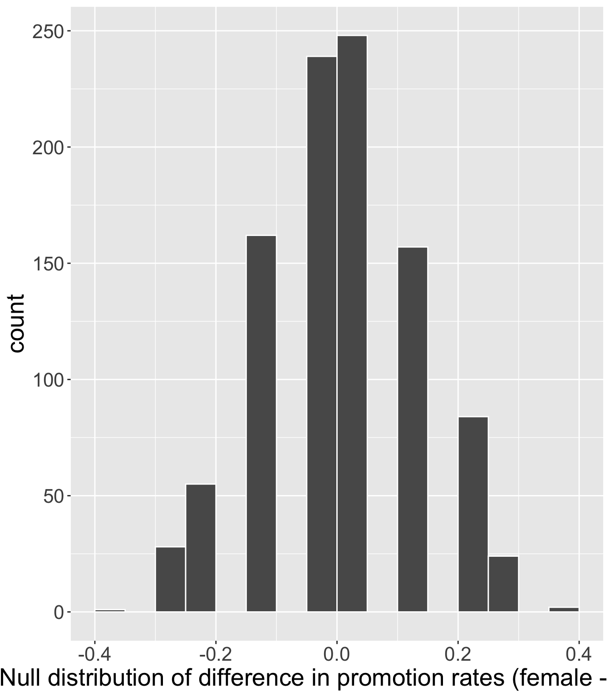
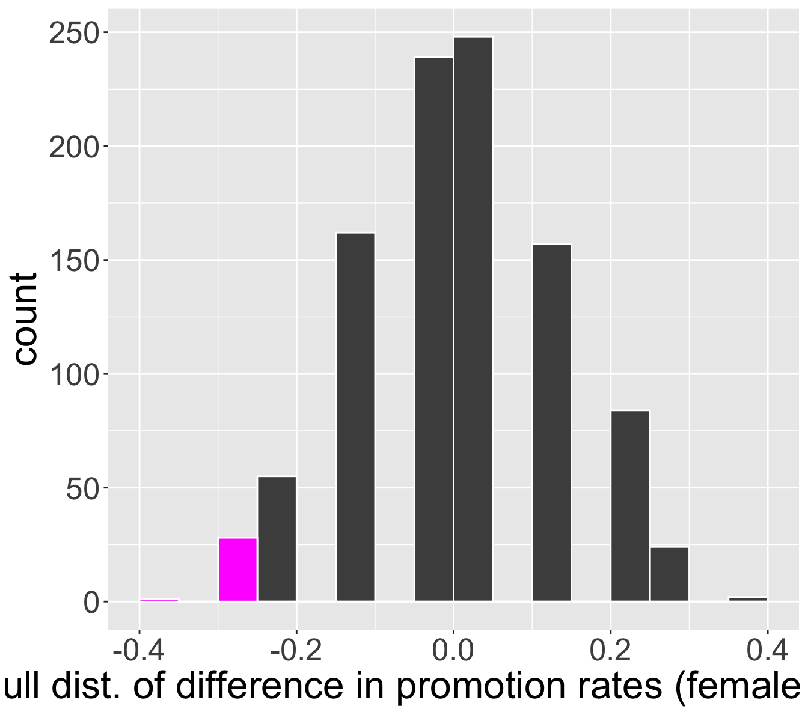
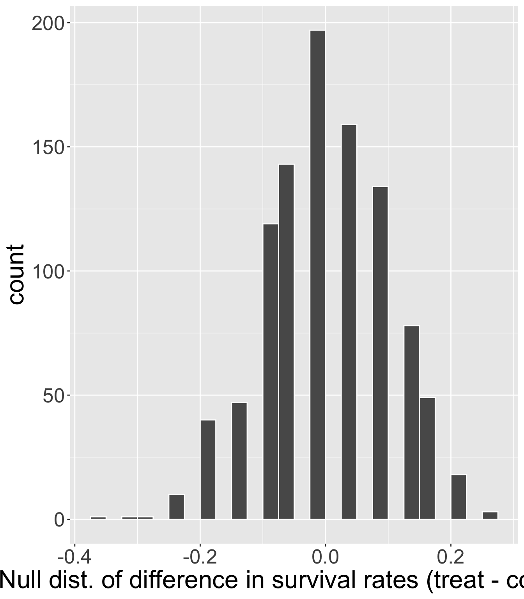
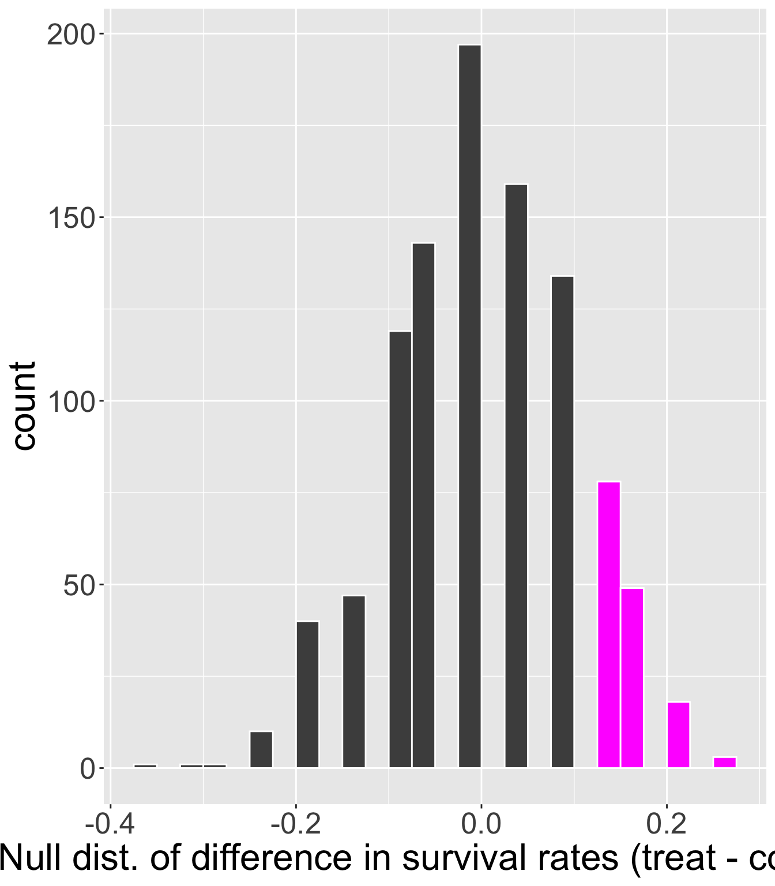

Hypothesis Testing with Randomization
Housekeeping
- Office hours change this week
Where we’re going today
We will see another kinds of hypotheses for different types of research questions
Hypothesis testing framework is the same, but will change how we obtain null distribution
Try to see the big picture
Test of independence
Running example: sex discrimination study
Note: this study considered sex as binary “male” or “female”, and did not take into consideration gender identities
Participants in the study were 48 bank supervisors who identified as male and were attending a management institute at UNC in 1972
Each supervisor was asked to assume the role of personnel director of a bank
They were each given a file to judge whether the person in the file should be promoted
The files were identical, except half of them indicated that the candidate was male, and the other half were indicated as female
Files were randomly assigned to bank managers
Experiment or observational study?
Research question: Are individuals who identify their sex as female discriminated against in promotion decisions made by their managers who identify as male?
Defining hypotheses
Research question: Are individuals who identify their sex as female discriminated against in promotion decisions made by their managers who identify as male?
What is/are the variables(s) here? What types of variables are they?
We need to construct hypotheses where \(H_{0}\) is “status quo” and \(H_{A}\) is the claim researchers have
\(H_{0}\): the variables
sexanddecisionare independent.- i.e. any observed difference in promotion rates is due to variability
\(H_{A}\): the variables
sexanddecisionare not independent, and equally-qualified female personnel are less likely to be promoted than male personnel
Data
For each of the 48 supervisors, the following were recorded:
The sex of the candidate in the file (male/female)
The decision (promote/not promote)
`summarise()` has grouped output by 'sex'. You can override using the `.groups`
argument.| sex | not promote | promote | total |
|---|---|---|---|
| female | 10 | 14 | 24 |
| male | 3 | 21 | 24 |
| total | 13 | 35 | 48 |
Are we prepared to answer our research question: Are individuals who identify their sex as female discriminated against in promotion decisions made by their managers who identify as male?
What evidence do we have?
Data (cont.)
Conditional probability of getting promoted by sex:
discrimination |>
count(sex, decision) |>
group_by(sex) |>
mutate(cond_prob = n/sum(n)) |>
filter(decision == "promote") |>
select(-n)# A tibble: 2 × 3
# Groups: sex [2]
sex decision cond_prob
<chr> <chr> <dbl>
1 female promote 0.583
2 male promote 0.875Is the observed difference -0.2916667 convincing evidence? We need to examine variability in the data, assuming \(H_{0}\) true.
Let’s set \(\alpha = 0.05\)
Simulate under null
Simulating under \(H_{0}\) means operating in a hypothetical word where
sexanddecisionare independent.- This means that knowing the
sexof the candidate should have no bearing on thedecisionto promote or not
- This means that knowing the
We will perform a simulation called a randomization test where we randomly re-assign
decisionandsexoutcome pairs to see what would have happened if the bankers’decisionhad been independent of candidate’ssex(i.e. if \(H_{0}\) true)
Randomization test
| sex | not promote | promote | total |
|---|---|---|---|
| female | 10 | 14 | 24 |
| male | 3 | 21 | 24 |
| total | 13 | 35 | 48 |
Write down “promote” on 35 cards and “not promote” on 13 cards. Repeat the following:
Thoroughly shuffle these 48 cards.
Deal out a stack of 24 cards to represent males, and the remaining 24 cards to represent females
- This is how we simulate independence under \(H_{0}\)
Calculate the proportion of “promote” cards in each stack, \(\hat{p}_{m, sim}\) and \(\hat{p}_{f, sim}\)
Calculate and record the difference \(\hat{p}_{f,sim} - \hat{p}_{m,sim}\) (order of difference doesn’t matter so long as you are consistent)
Randomization test (activity)
Try it!
Randomization test (code)
Let’s perform one iteration of the simulation.
# reproducibility
set.seed(1)
n_female <- sum(discrimination$sex == "female")
n_male <- sum(discrimination$sex == "male")
# create cards
cards <- discrimination$decision
# shuffle cards
shuffled <- sample(cards)`summarise()` has grouped output by 'sex'. You can override using the `.groups`
argument.| sex | not promote | promote | total |
|---|---|---|---|
| female | 8 | 16 | 24 |
| male | 5 | 19 | 24 |
| total | 13 | 35 | 48 |
- Under this simulation, 0.6666667 of females were promoted, and 0.7916667 of males were promoted. Simulated difference: -0.125
Null distribution
Repeat the previous step 1000 times:

Obtain p-value
Recall, the observed difference in our data was \(\hat{p}_{f} - \hat{p}_{m} =\) -0.2916667.
p-value is probability of observing data as or more extreme than our original data, given \(H_{0}\) true.
Where does “as or more extreme” correspond to on our plot?

- Out of 1000 simulations under \(H_{0}\), 29 resulted in a difference in promotion rates as or more extreme than our observed
- So the p-value is 0.029
Making decision and conclusion
Our research question: Are individuals who identify their sex as female discriminated against in promotion decisions made by their managers who identify as male?
- \(H_{0}\):
sexanddecisionare independent - \(H_{A}\):
sexanddecisionare not independent and equally-qualified female personnel are less likely to get promoted than male personnel by male supervisors - \(\alpha = 0.05\)
Interpret our p-value in context.
Make a decision and conclusion in response to the research question.
Making decision and conclusion (answer)
Assuming that
sexanddecisionare independent, the probability of observing a difference in promotion rates as or more extreme as we did is 0.029.Because the observed p-value of 0.029 is less than our significant level 0.05, we reject \(H_{0}\). The data provide strong evidence of sex discrimination against female candidates by the male supervisors.
What kind of error could we have made?
Comparing two proportions
Running example: CPR
An experiment was conducted, consisting of two treatments on 90 patients who underwent CPR for a heart attack and subsequently went to the hospital. Each patient was randomly assigned to either:
treatment group: received a blood thinner
control group: did not receive a blood thinner
For each patient, the outcome recorded was whether they survived for at least 24 hours.
`summarise()` has grouped output by 'group'. You can override using the
`.groups` argument.| group | died | survived | total |
|---|---|---|---|
| control | 39 | 11 | 50 |
| treatment | 26 | 14 | 40 |
| total | 65 | 25 | 90 |
What is/are the variables(s) here? What types of variables are they?
Defining hypotheses
The researchers are interested in learning if the blood thinner treatment was effective.
In words, try to determine \(H_{0}\) and \(H_{A}\).
- Let \(p_{T}\) and \(p_{C}\) denote the proportion of patients who survive when receiving the thinner (Treatment) and when not receiving the treatment (Control), respectively
Option 1
\(H_{0}\): \(p_{T} \leq p_{C}\)
\(H_{A}\): \(p_{T} > p_{C}\)
Option 2 (preferred)
\(H_{0}\): \(p_{T} - p_{C} \leq 0\)
\(H_{A}\): \(p_{T} - p_{C}> 0\)
Collect data
Using the data, obtain the observed difference in sample proportions.
| group | died | survived | total |
|---|---|---|---|
| control | 39 | 11 | 50 |
| treatment | 26 | 14 | 40 |
| total | 65 | 25 | 90 |
p_hat_c <- cpr |>
filter(group == "control") |>
summarise(p = mean(outcome == "survived")) |>
pull()
p_hat_t <- cpr |>
filter(group == "treatment") |>
summarise(p = mean(outcome == "survived")) |>
pull()
obs_diff <- p_hat_t - p_hat_c\(\hat{p}_{C} = \frac{11}{50} = 0.22\)
\(\hat{p}_{T} = \frac{14}{40} = 0.35\)
Observed difference: \(\hat{p}_{T} - \hat{p}_{C} = 0.13\)
Is this “convincing evidence” that blood thinner usage after CPR is effective?
Set \(\alpha = 0.05\)
Simulate under null
We will once again perform a randomization test to try and simulate the difference in proportions under \(H_{0}\)
- Under \(H_{0}\), treatment group is no better than control group, so let’s simulate assuming that outcome and treatment are independent
Write down
diedon 65 cards, andsurvivedon 25 cards. Then repeat several times:Shuffle cards well
Deal out 50 to be Control group, and remaining 40 to be Treatment group
Calculate proportions of survival \(\hat{p}_{C, sim}\) and \(\hat{p}_{T, sim}\)
Obtain and record the simulated difference \(\hat{p}_{T, sim} - \hat{p}_{C, sim}\)
Simulate under null (code)
Live code
Visualizing null distribution

How would we obtain the p-value in this problem?
Calculate p-value

We observed 148 out of 1000 simulations where the difference in proportions under \(H_{0}\) was as or more extreme than our observed difference of 0.13
So p-value is 0.148
Interpret and make conclusion
The researchers are interested in learning if the blood thinner treatment was effective.
Our p-value is 0.148 and our selected significance level was \(\alpha = 0.05\).
- Make a decision and conclusion about the research question in context.
Comprehension questions
What were the similarities and differences between:
hypothesis test for independence
hypothesis test for two proportions
How do the randomization tests today differ from the test for one proportion that we learned last class?